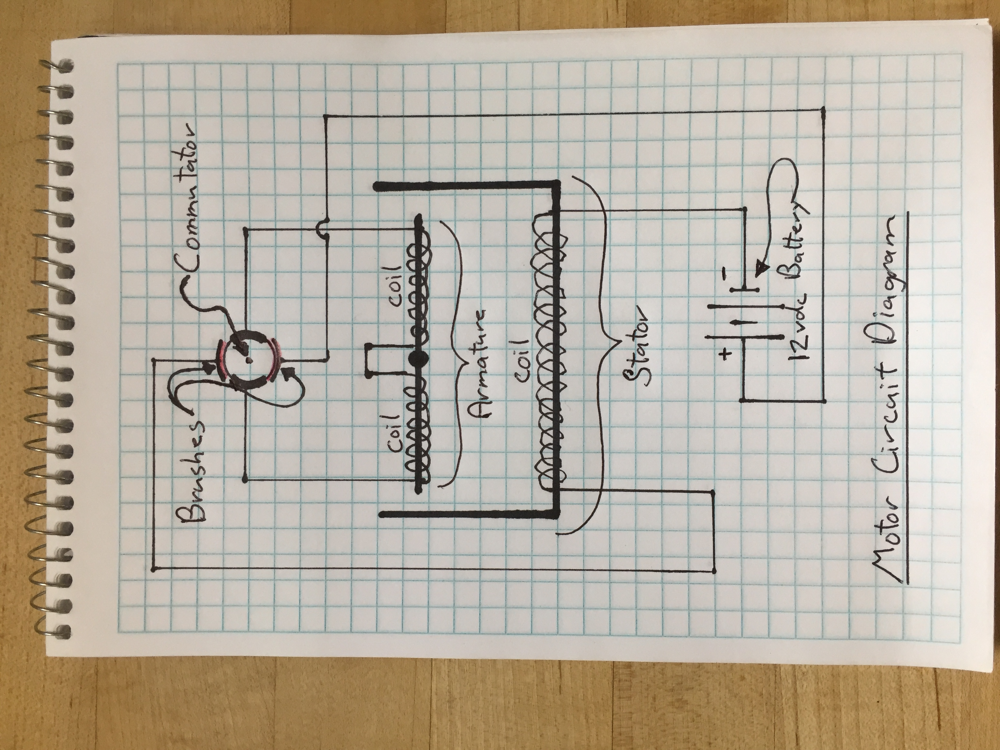
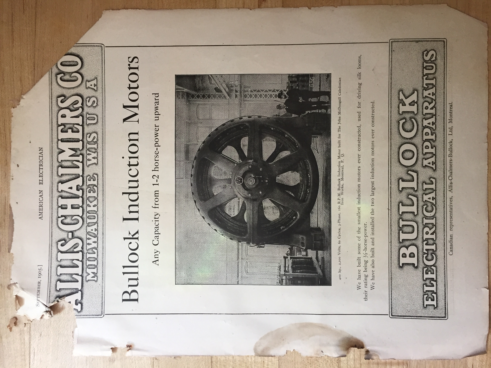

Rapid Prototyping
The Electric Motor as Kinetic Sculpture :
I decided to make a DC motor from bits of threaded rod, nuts, plywood, washers, copper drip-edge, and some 18/3 thermostat wire.

(I hope to add more documentation to this posting later today!)
I'm shockingly happy with how this "kinetic sculpture?" turned out? I really didn't have much of a plan in mind when I started on it Sunday morning, but got lucky! Initially I intended to use large nails for the armature, stator, etc.. The biggest nails I had were 16D (3.5") so I went on to plan B (threaded rod). Thank God I couldn't find the big nails!! That would have been a mistake.
I did not know how many turns of wire would be necessary to create adequate magnetic fields around the armature and stator, but felt that I needed as much resistance as I could get to keep the current in the curcit as low as possible. I used all the 18 gauge wire that was available in my garge--23 feet of 18/3 thermostat wire. I love the simplicity of the circuit. The commutator/brushes basically act as a switch pulsing current through the two coils. I guess this is some what similar to "pulse width modulation". The current is turned on twice per revolution of the armature. I tried to get a reading on the amp draw, but the circuit pulses so quickly the multimeter did not register a consistant value. However, after running the motor sculpture several times the 10 amp fuse in the multimeter did blow. I think it happened on startup. The total resistance of the 69 feet of #18 wire that makes up the coils is one ohm. I used a car battery to power the circuit (12.6vdc actual under load). V=I*R, I=V/R, 12.6vdc/1.0 ohms= 12.6 amps! Judging by the lack of power the motor seems to have, most of the energy consumed must be heating up the coils and threaded rod.
The timing of the contact points on the armature could be set a little better: the circit turns on 45 degrees before the magnetic fields are lined up with each other. However, the circuit stays on until about 45 degrees after alignment of the fields. I assume higher efficency would be realized if the curcuit shut off at or maybe just before alignment of the magnetic poles. If time allows, I will adjust this timing. It will require removing the small copper pads on commutator, and trimming their width to about 50% of the current size.
Another detail of this super simple design is the fact that the polarity of the magnetic field around the armature is reversed with every other "pulse" of current. This is simply accomplished by the rotation of the contacts of the commutator from the positive brush to the negative brush.
Return to my home page.
This is the armature before the 18 gauge wire was added. It is constructed using 3/8" threaded rod, 3/8-16 heavy nuts, pvc sleave, and washers.

Here is the motor/kinetic sculpture before any wire has been added.

Wiring circuit schematic for the motor sculpture.
Picture of a 400hp electric motor from a magazine I found in my grandfather's basement: the September 1905 issue of "American Electrician."
This is a slow motion video of the Motor in action connected to the 12 volt battery!!